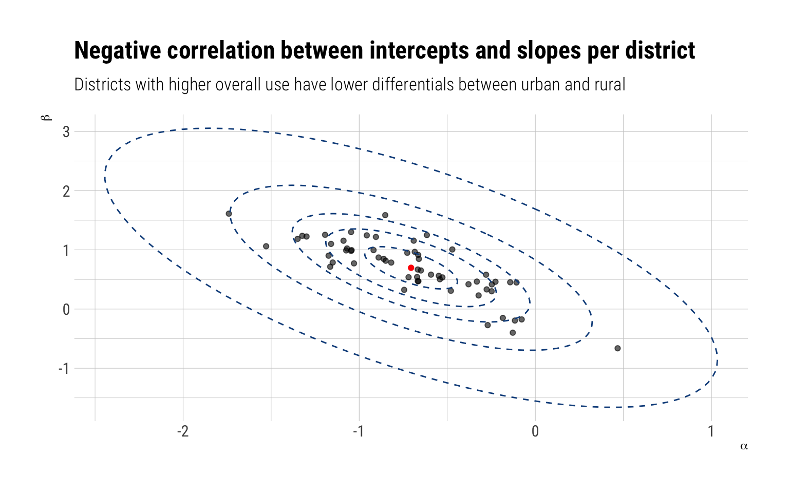
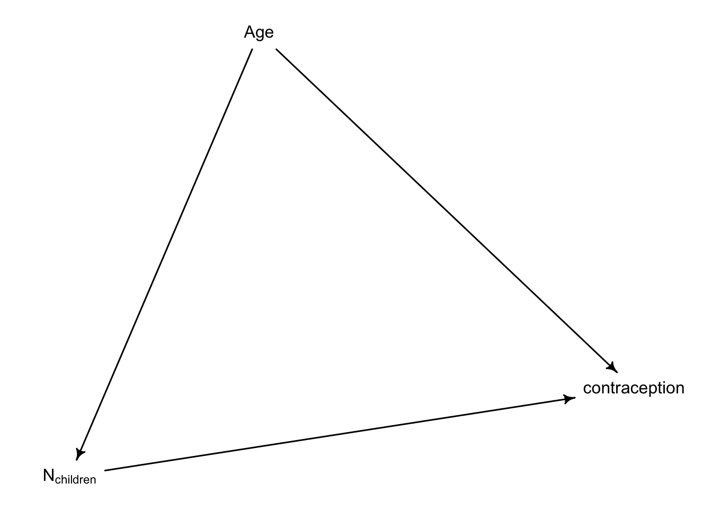
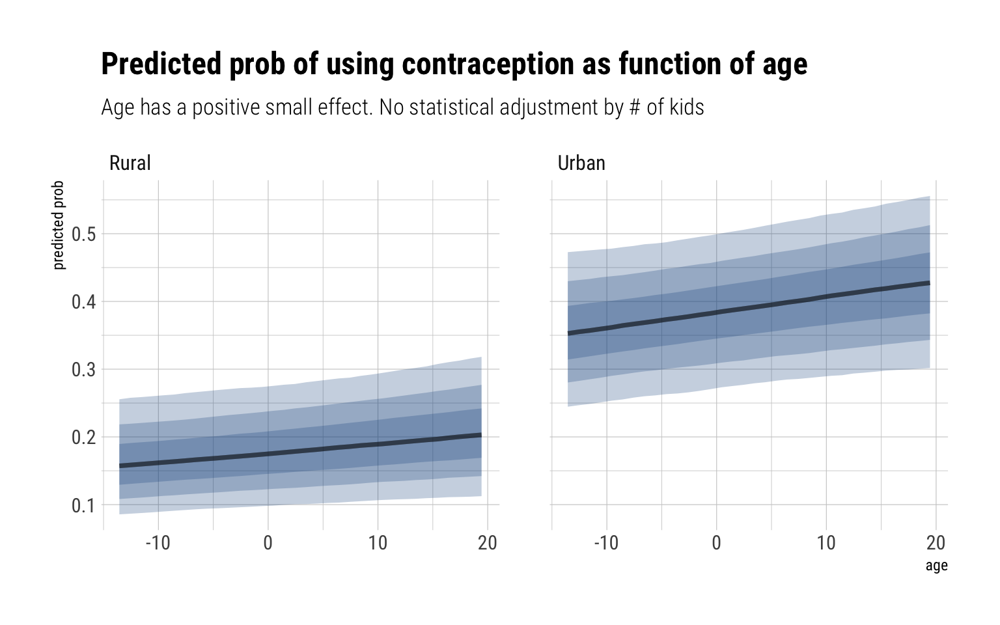
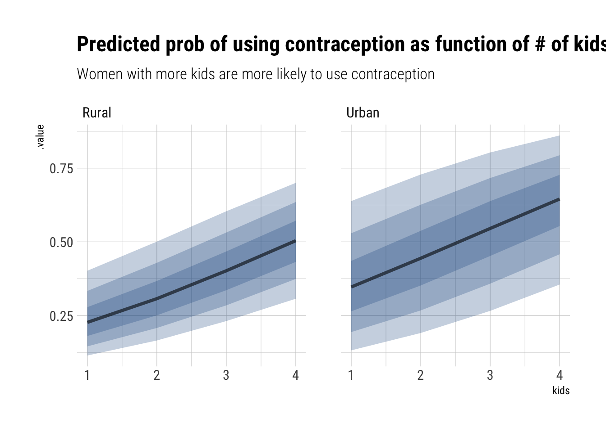
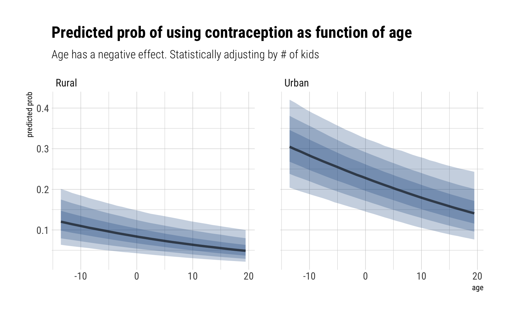

Week 9 was all about fitting models with multivariate distributions in them. For example, a multivariate likelihood helps us use an instrumental variable to estimate the true causal effect of a predictor. But also as an adaptive prior for some of the predictors. In both cases, we found out that the benefit comes from modelling the resulting var-cov matrix. In the instrumental variable case, the resulting joint distribution for the residuals was the key to capture the statistical information of the confounding variable. In the adaptive prior case, it helps understand the relationship between different parameter types.
Homework
1st question
Revisit the Bangladesh fertility data,data(bangladesh). Fit a model with both varying intercepts by district_id and varying slopes of urban (as a 0/1 indicator variable) by district_id. You are still predicting use.contraception. Inspect the correlation between the intercepts and slopes. Can you interpret this correlation, in terms of what it tells you about the pattern of contraceptive use in the sample? It might help to plot the varying effect estimates for both the intercepts and slopes, by district. Then you can visualize the correlation and maybe more easily think through what it means to have a particular correlation. Plotting predicted proportion of women using contraception, in each district, with urban women on one axis and rural on the other, might also help.
data("bangladesh")# Fix the district idbangladesh %>%mutate(district_id =as.integer( as.factor(district) ) ) -> bangladeshglimpse(bangladesh)
The contraceptive use is not that likely, thus the negative (in log-odds scale) average value in the adaptive prior for \(a\). The positive value for \(b\), on the other hand, indicates that the average distribution of slopes is positive. That is, women in urban areas are, on average, more likely to use contraception. Finally, the variances. Both indicate quite a bit of variation in the multivariate population for intercepts and slopes.
precis(model_varying, pars ="Rho", depth =3)
mean sd 5.5% 94.5% n_eff Rhat4
Rho[1,1] 1.0000000 0.0000000 1.000000 1.0000000 NaN NaN
Rho[1,2] -0.6585362 0.1612475 -0.868516 -0.3679604 710.9425 1.003216
Rho[2,1] -0.6585362 0.1612475 -0.868516 -0.3679604 710.9425 1.003216
Rho[2,2] 1.0000000 0.0000000 1.000000 1.0000000 NaN NaN
There’s a negative correlation between the parameter types: i.e., for districts with higher contraceptive usage overall, the correlation informs us that we should predict a lower than average differential in the use of contraceptives between rural and urban areas.
We can follow Richard’s advice and plot both types of parameters for each district. We can even overlay the ellipses that determine the levels of the multivariate adaptive prior:
samples$alpha %>%as_tibble() %>%pivot_longer(everything(), names_to ="district_id_", names_prefix ="V", values_to ="alpha") %>%bind_cols(samples$beta %>%as_tibble() %>%pivot_longer(everything(), names_to ="district_id", names_prefix ="V", values_to ="beta")) %>%group_by(district_id) %>%median_qi(alpha, beta) %>%select(district_id, alpha, beta) %>%ggplot(aes(alpha, beta)) +geom_point(alpha =0.6) +geom_path(data = data_elipses,inherit.aes = F,mapping =aes(x, y, group = level), linetype =2, color ="dodgerblue4") +geom_point(data =data.frame(x = Mu_est[1]), y = Mu_est[2], color ="red",inherit.aes =FALSE,mapping =aes(x, y)) +labs(title ="Negative correlation between intercepts and slopes per district",subtitle ="Districts with higher overall use have lower differentials between urban and rural",x =expression(alpha),y =expression(beta))

2nd question
Now consider the predictor variables age.centered and living.children, also contained in data(bangladesh). Suppose that age influences contraceptive use (changing attitudes) and number of children (older people have had more time to have kids). Number of children may also directly influence contraceptive use. Draw a DAG that reflects these hypothetical relationships. Then build models needed to evaluate the DAG. You will need at least two models. Retain district and urban, as in Problem 1. What do you conclude about the causal influence of age and children?
dag <- dagitty::dagitty(" dag { Age -> N_children Age -> contraception N_children -> contraception }")drawdag(dag)

Conditional on this DAG, the total causal effect of Age on contraception is mediated (pipe) with Number of Children. Thus, to get the total effect we must not control by number of children.
Rhat4
Min. :0.9991
1st Qu.:0.9996
Median :1.0000
Mean :1.0002
3rd Qu.:1.0005
Max. :1.0069
NA's :2
The \(\hat{R}\) look OK, indicating that the Markov chains are in close agreement with each other. Let’s check the parameters:
precis(model_only_age, depth =3, pars =c("a", "b", "gamma", "sigma", "Rho"))
mean sd 5.5% 94.5% n_eff Rhat4
a -0.711537292 0.102268885 -0.8787672400 -0.55198898 2905.2135 1.0005300
b 0.695464373 0.173304390 0.4243350000 0.97019381 2109.0982 1.0006393
gamma 0.009474581 0.005552167 0.0005521033 0.01849995 8484.1344 0.9992501
sigma[1] 0.584962697 0.100125045 0.4371533400 0.75428655 1260.7598 1.0016182
sigma[2] 0.802377308 0.196794320 0.5076205600 1.13047220 586.1314 1.0069074
Rho[1,1] 1.000000000 0.000000000 1.0000000000 1.00000000 NaN NaN
Rho[1,2] -0.650102143 0.167089307 -0.8636559950 -0.33474679 864.0654 1.0037881
Rho[2,1] -0.650102143 0.167089307 -0.8636559950 -0.33474679 864.0654 1.0037881
Rho[2,2] 1.000000000 0.000000000 1.0000000000 1.00000000 NaN NaN
The distribution of intercepts and slopes looks completely unchanged. For the \(\gamma\), our estimated effect has much of its probability mass around zero and 0.02. Therefore, we conclude that the total causal effect of age on the use of contraception is small. For example, let’s take the woman from the first district and predict our expected probability that they use contraception, across both urban and rural areas, as function of age:
data.frame(data_varying) %>%group_by(urban) %>%data_grid(age, district_id =1) %>%add_fitted_draws(model_only_age) %>%ggplot(aes(age, .value)) +stat_lineribbon(fill ="dodgerblue4", alpha =1/4) +scale_fill_brewer(palette ="Greys") +facet_wrap(~factor(urban, labels =c("Rural", "Urban"))) +labs(title ="Predicted prob of using contraception as function of age",subtitle ="Age has a positive small effect. No statistical adjustment by # of kids ",y ="predicted prob")

Now for the model that takes into account the number of children each woman has:
Our population distribution for slopes and parameters has shifted: the average probability of using contraception, for a woman with 1 kids, is much lower. That can be explained as our parameters for the number of children, \(\delta\), is clearly positive with an 87% compatibility interval between (0.33, 0.50) in the log-odds. Notice also that the effect of age has changed signs and it’s mass is around (-0.04, -0.02) in the log odds scale. That is, older women, adjusting by the number of children they have, are less likely to use contraception.
Let’s plot the effect of having children for the women of the district 20 of average age:
data.frame(data_varying) %>%group_by(urban) %>%data_grid(kids, district_id =20, age =0) %>%add_fitted_draws(model_age_kids) %>%ggplot(aes(kids, .value)) +stat_lineribbon(fill ="dodgerblue4", alpha =1/4) +scale_fill_brewer(palette ="Greys") +facet_wrap(~factor(urban, labels =c("Rural", "Urban"))) +labs(title ="Predicted prob of using contraception as function of # of kids",subtitle ="Women with more kids are more likely to use contraception")

Now, for age:
data.frame(data_varying) %>%group_by(urban) %>%data_grid(age, district_id =1, kids =1) %>%add_fitted_draws(model_age_kids) %>%ggplot(aes(age, .value)) +stat_lineribbon(fill ="dodgerblue4", alpha =1/4) +scale_fill_brewer(palette ="Greys") +facet_wrap(~factor(urban, labels =c("Rural", "Urban"))) +labs(title ="Predicted prob of using contraception as function of age",subtitle ="Age has a negative effect. Statistically adjusting by # of kids",y ="predicted prob")

Going back to our DAG, our findings are in accordance with it. The total causal effect of age is less than the direct causal effect due to the pipe that goes through number of kids. That is, older women have lower probabilities to use contraception once we statistically adjust by the number of kids they have. However, older women also tend to have more children and the direct effect of having more children is to be less likely to use contraception. Therefore, the mixed signal that we get from the total effect.
3rd question
Modify any models from Problem 2 that contained that children variable and model the variable now as a monotonic ordered category, like education from the week we did ordered categories. Education in that example had 8 categories. Children here will have fewer (no one in the sample had 8 children). So modify the code appropriately. What do you conclude about the causal influence of each additional child on use of contraception?
Almost inadvertently, in our previous model we assumed that the additional effect of each kid in the log odds of using contraception was constant. By modelling as an ordered category, we let the data decide whether it should be so.
The overall effect of the children variable, when a woman has 4 children, has the same sign and roughly the same magnitude as previous inferences. Let’s look at the effect splitted by the number of children:
precis(model_age_kids_ord, depth =3, pars ="delta")
Remember that these are percentages of the total effect. That is, around 73% of the total effect comes from having the second child. Therefore, we conclude that most of the effect that having children increases the chances of using contraception comes from having a second child.